Mais de seis décadas a ligar o porto ao horizonte.
Uma herança que se conta em travessias, não em anos.
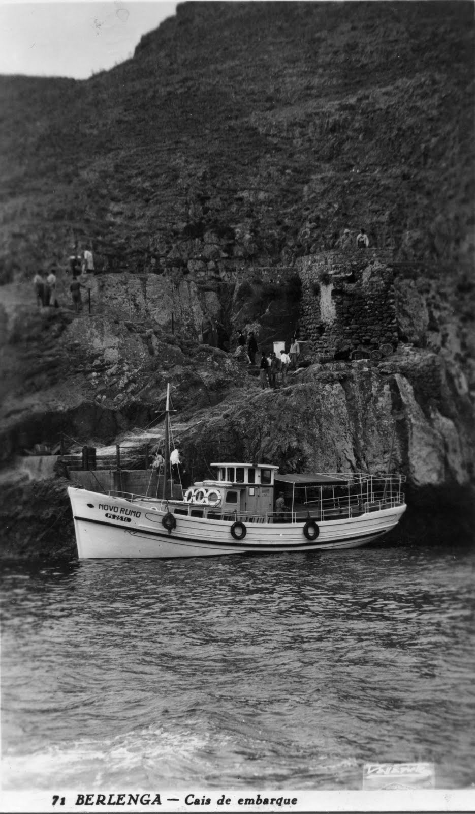
Em 1958, alguém em Peniche olhou para o horizonte e viu a Berlenga. Não como obstáculo — como destino. Assim nasceu a Viamar: de uma decisão simples, tomada à beira-mar, com a ilha à vista e o barco ao cais.
Foi sempre uma empresa de família. O porto como escritório, o mar como estrada. As reservas faziam-se de viva voz, a confiança não precisava de contrato. Havia uma ilha para alcançar — e havia quem a soubesse alcançar.
"O mar não se explica.
Atravessa-se."
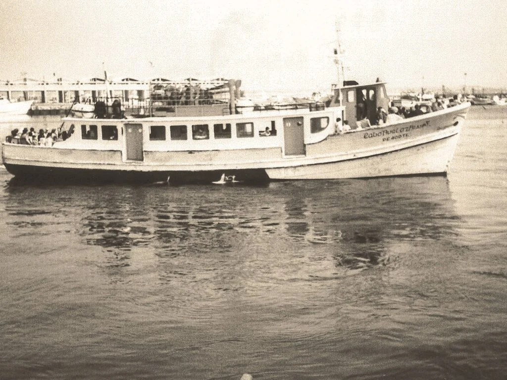
Há embarcações que se tornam parte da paisagem de um lugar. O Cabo Avelar Pessoa é uma delas — reconhecida ao amanhecer por gerações de Penicheiros que sabem que o verão começa ali, na fila do cais, com a proa apontada à Berlenga.
Com capacidade para 190 passageiros, inspecionado anualmente pela Autoridade Marítima Nacional. Mas o que os números não dizem é o que a silhueta representa: a promessa de uma travessia que vai acontecer, como tem acontecido há décadas.
A Berlenga não se descreve facilmente. Pedras antigas, água de azul impossível, silêncio partido pelo vento do largo. Reserva Natural protegida, Reserva da Biosfera da UNESCO — mas sobretudo um lugar que fica na memória de quem a visita.
Quem vai uma vez, quer voltar. É esse regresso que define a Viamar: a certeza de que estaremos aqui, prontos para fazer a travessia, como temos feito há mais de seis décadas.
Fotografias recolhidas ao longo de décadas.
O mar não muda — o que muda são os rostos que o atravessam.
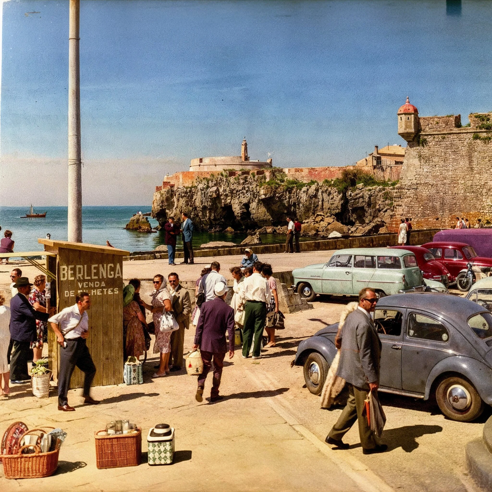
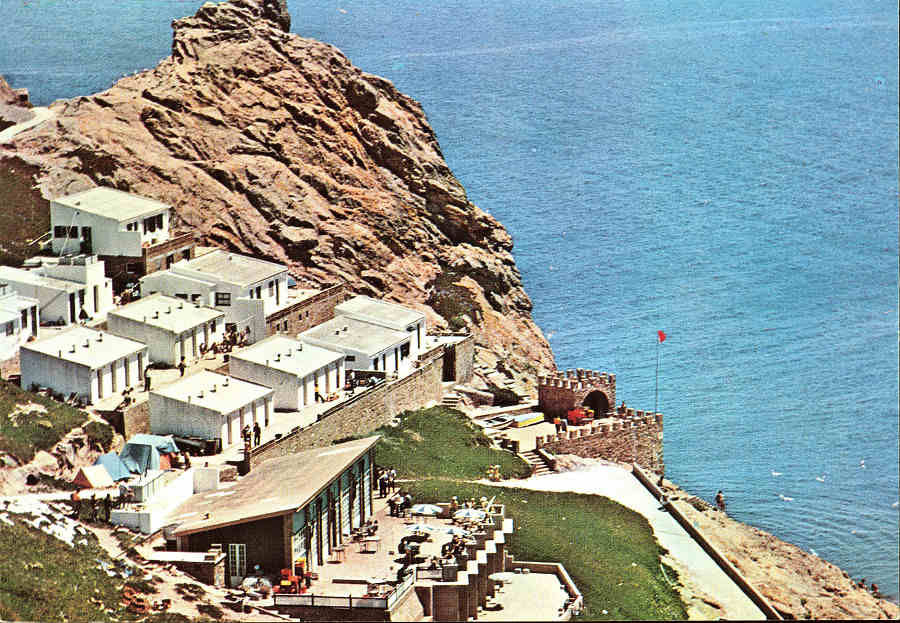
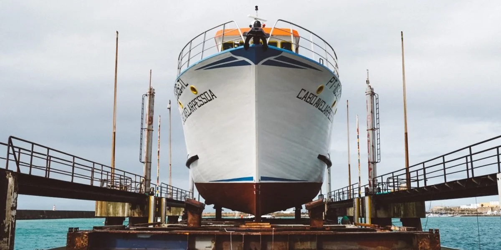
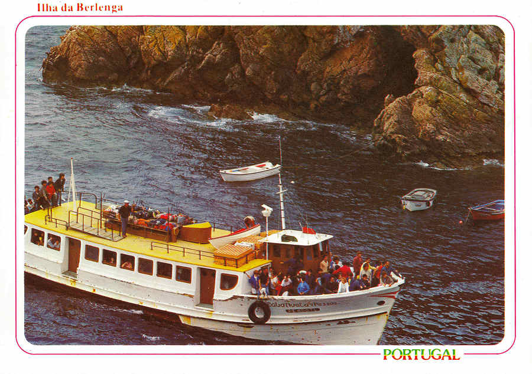
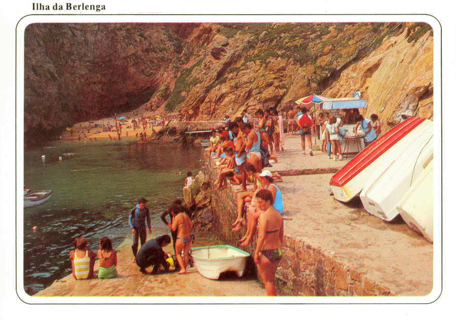
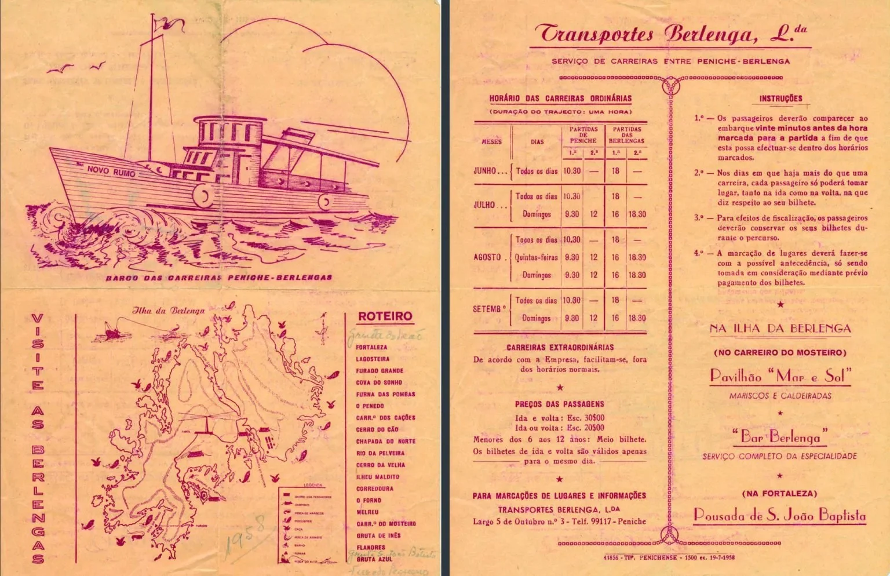
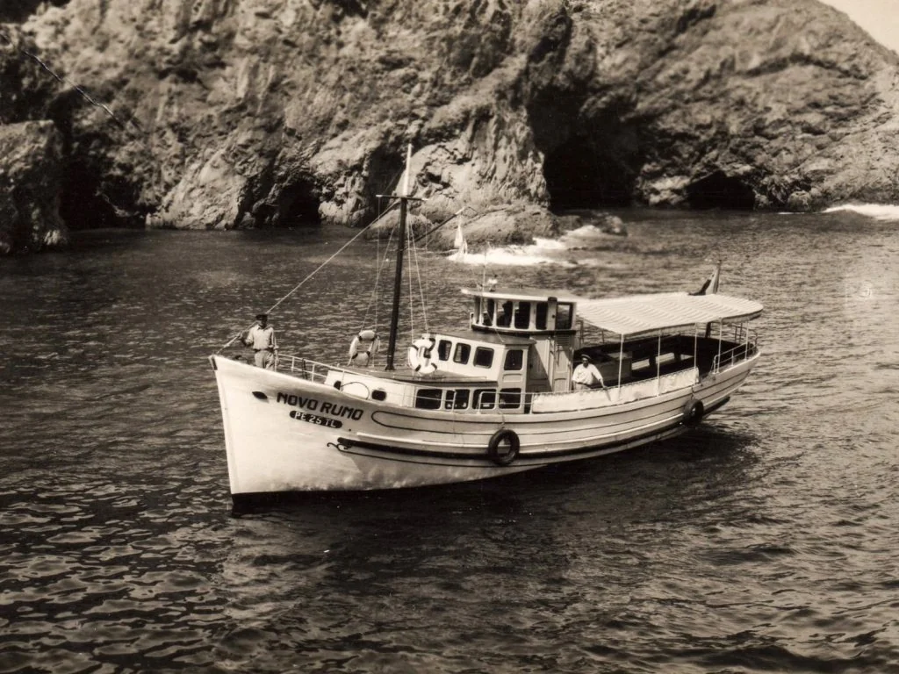
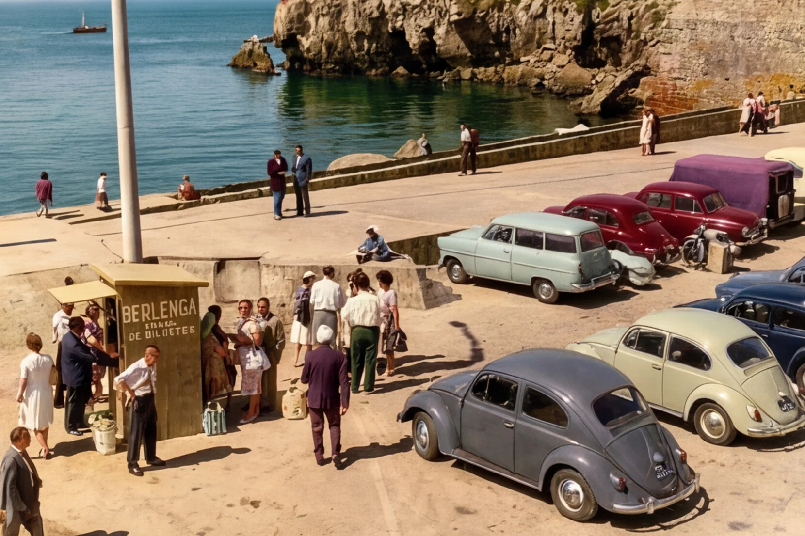
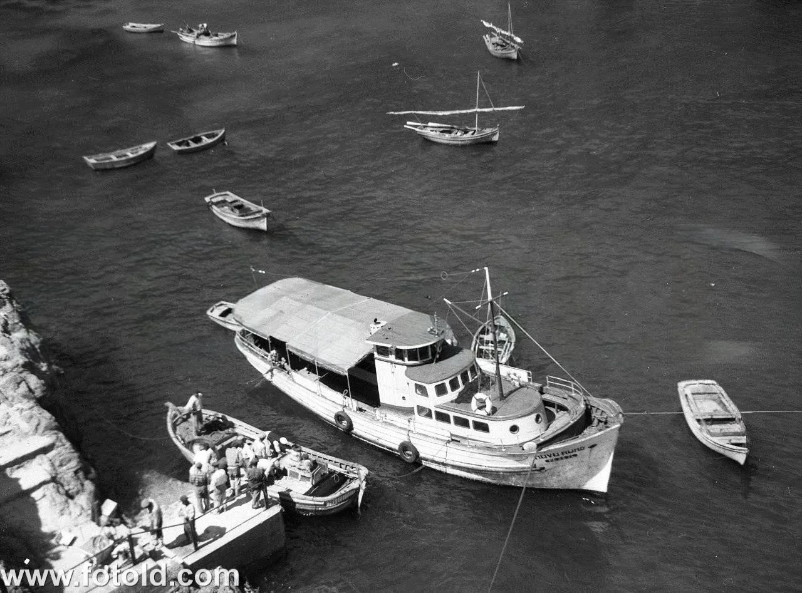
"O mar não tem memória.
Nós guardamos a nossa."